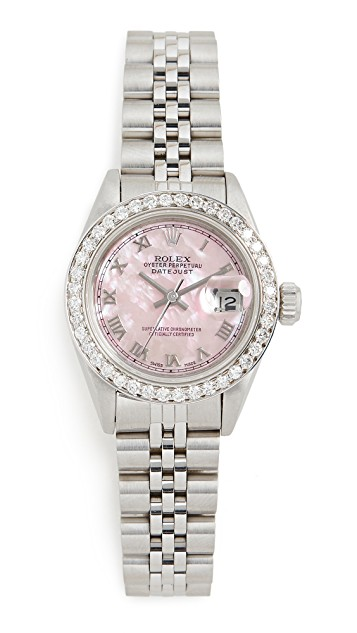

Pre-Owned Rolex Ladies Rolex $9,950.00 GUESS - Reloj de vestir de acero inoxidable y vidrio, para hombre Reloj Bulova para Caballero 98A227 Reloj Bulova para Caballero 98A227 GUESS - Reloj de vestir de acero inoxidable y vidrio, para hombre GUESS - Reloj de vestir de acero inoxidable y vidrio, para hombre
Nosotros Nosotros somos una empresa dedicada a la venta de relojes de lujo, xal rededor del mundo desde 1970